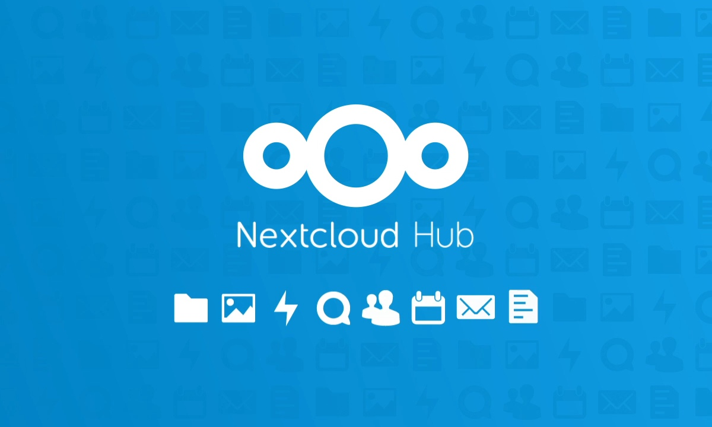
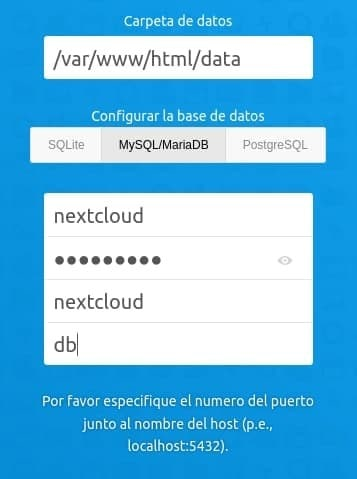

Llegó la versión 24 de Nextcloud y pese no haber muchos cambios en el método de instalación respecto a la versión 21, vamos a ver como instalarlo.

Los puntos fuertes de Nextcloud son:
Voy a explicaros cómo montar el Docker, con docker-compose para arquitectura amd64, ARM64 y Raspberry Pi.
version: '2'
volumes:
nextcloud:
db:
services:
db:
image: mariadb
container_name: nextclouddb
command: --transaction-isolation=READ-COMMITTED --binlog-format=ROW
restart: always
volumes:
- db:/var/lib/mysql
environment:
- MYSQL_ROOT_PASSWORD=vfgku8ufg56 #Cambiar esto
- MYSQL_PASSWORD=vbbyu76f6967 #Cambiar esto
- MYSQL_DATABASE=nextcloud
- MYSQL_USER=nextcloud
app:
image: nextcloud
container_name: nextcloud
ports:
- 8080:80
links:
- db
volumes:
- $HOME/docker/nextcloud:/var/www/html #Cambie 'nextcloud' a su volumen de unidad externa si está disponible
- /almacenamiento_local:/almacenamiento_local
restart: alwaysPara montar el docker compose con su base de datos en mariadb para Raspberry Pi o ARM:
version: '2'
volumes:
nextcloud:
db:
services:
db:
image: yobasystems/alpine-mariadb:latest
container_name: nextclouddb
command: --transaction-isolation=READ-COMMITTED --binlog-format=ROW
restart: always
volumes:
- db:/var/lib/mysql
environment:
- MYSQL_ROOT_PASSWORD=vfgku8ufg56 #Cambiar esto
- MYSQL_PASSWORD=vbbyu76f6967 #Cambiar esto
- MYSQL_DATABASE=nextcloud
- MYSQL_USER=nextcloud
app:
image: nextcloud
container_name: nextcloud
ports:
- 8080:80
links:
- db
volumes:
- $HOME/docker/nextcloud:/var/www/html #Cambie 'nextcloud' a su volumen de unidad externa si está disponible
- /almacenamiento_local:/almacenamiento_local
restart: alwaysEn el ejemplo que he utilizado, Nextcloud será accesible por el puerto 8080 .
Pon el usuario y contraseña del que será el administrador, seleciona como base de datos mariadb\* , escribe la contraseña del usuario de mariadb y resto de datos como aparece en la imágen e inicia la instalación.

Para forzar a Nextcloud a utilizar https en su conexión y utilice esta como raíz de todas las páginas, editaremos el archivo config.php .
En mi caso, utilizaré nano para editar el archivo.
Hay que modificar:
Vamos añadir 3 dominios de confianza, para poder acceder a Nextcloud
'overwriteprotocol' => 'https',
'trusted_domains' =>
array (
0 => '192.168.1.100:90','nextcloud.midominio.duckdns.org','next.midominio.duckdns.org'Nextcloud nos pedirá que añadamos nuestra región telefónica para el registro de usuarios mediante teléfono. Vamos a a añadir también, igual que en el paso anterior, estos valores al archivo config.php .
'force_language' => 'es',
'default_locale' => 'es_ES',
'force_locale' => 'es_ES',
'default_phone_region' => 'ES',Una vez iniciado Nextcloud, accederemos en el menú de la parte superior derecha, accederemos a la opción Configuración -> Vista generas .
Ahora Nextcloud analizará nuestra configuración y nos propondrá que tenemos que arreglar para que todo esté correctamente configurado, si no lo está.
Yo estoy utilizando Caddy como proxy inverso. En mi caso, para solucionar todos los problemas he añadido al archivo Caddyfile la siguiente configuración:
nextcloud.midominio.duckdns.org {
redir /.well-known/carddav /remote.php/carddav 301
redir /.well-known/caldav /remote.php/caldav 301
reverse_proxy http://192.168.1.102:92 {
}
encode gzip
header {
Strict-Transport-Security max-age=31536000;
Referrer-Policy no-referrer-when-downgrade
}
}Con esta configuración, Nextcloud me ha dicho que todo está perfecto
Para evitar ataques de fuerza bruta, Nextcloud si detecta que hay muchos accesos desde la misma IP, puede forzar a que cada vez que te conectes al servidor tengas que esperar 30 segundos. Para deshabilitar esta opción, tienes que añadir en el archivo de configuración:
'auth.bruteforce.protection.enabled' => false,
Cuando miramos si Nextcloud está bien instalado, nos mostrará un mensaje que falta la compatibilidad con archivos svg.
Esta compatibilidad está deshabilitada de manera predeterminada por razones de seguridad. Para agregar esta compatibilidad cuando instalamos un nueva imágen docker, tenemos que instalar el paquete php-imagick .
docker exec -it nextcloud apt update ; apt-get install libmagickcore-6.q16-6-extra
Otra opción de instalación, sería:
docker exec nextcloud bash -c 'apt-get install -y --no-install-recommends $(apt-cache search libmagickcore-6.q[0-9][0-9]-[0-9]-extra | cut -d " " -f1)'
Ahora solo que disfrutar de Nextcloud.
Publicado por Angel el Tuesday 10 May del 2022
También te puede interesar:
Powered by org-bash-blog
Written in OrgMode with Emacs and converted to HTML with Pandoc

Este obra está bajo una licencia de Creative Commons Reconocimiento-NoComercial-CompartirIgual 4.0 Internacional.